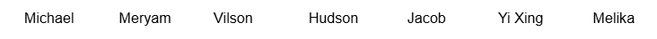

Intro Activity

Use the arrow buttons to search the list of names above for the name Jacob. Does it exist in the list? If so, at what index (position)? If not, at what point did you become sure it wasn't? Note: the left arrow will reset the list back to the first name (ie. index 0 in the list).
Search the list above for the name Supriya. Does it exist in the list? If so, at what index? If not, at what point did you become sure it wasn't?
Suppose you needed to find a name in the list above that contains the letter x, and state its index. Describe how you would do this. Feel free to try it.
Suppose a list of names was in alphabetical order and you needed to search for the name Albert. Would you search until you reached the end of the list? If not, how would you know when to stop?
Coding activity
Find an item in an array
Create a static method called findIndex, which takes in an array of Strings and a String to search for and returns the index of that String in the array, or -1 if the String is not in the array.
Create an array of at least 5 Strings and try using it to search for a String that exists in the array and a String that doesn't.
If you are stuck, try the guided walkthrough video.
Example solution
public static int findIndex(String[] arr, String target) {
for (int i = 0; i < arr.length; i++) {
if (arr[i].equals(target)) {
return i;
}
}
return -1;
}Linear search
Your findIndex method from the coding activity above probably used a loop. The loop probably started at the first item in the array and moved forward through it, one item at a time, checking each one to see if it was what you were searching for.
When you search through an a collection of items sequentially (in order, one at a time), it is called a linear search. This is useful when there is no particular order to the content being searched.
Check Your Understanding 1
State the worst-case time complexity of your method, in Big O notation, where n represents the length of the input array.
Which of the following is not true about linear search?
The Binary Search
The objective of this activity is to try to come up with a strategy that will allow you to win this 100 boxes game every time.
100 Boxes Game
A $1,000,000 jackpot is in one of these 100 boxes! You can ask up to 7 yes/no questions to find out which box contains the jackpot. After that, click on the box you believe contains the money. If you guess correctly, you win! Click on the dropdown below the grid of boxes for a hint if you are stuck.
Into the first box below, enter one of following comparison operators:<, >, <=, >=, or =; followed by an integer from 1 to 100 in the next box. For example, entering <= and 5 asks whether the number on the box containing the jackpot is less than 5.
Need a hint? Click here!
Hint: Can you come up with a question that is guaranteed to eliminate a significant portion of the boxes, regardless of whether the answer is yes or no?
Once you have come up with a strategy that you believe can be used to win the 100 boxes game every time, explain it to a partner. Your partner must play using your algorithm; you may not instruct them while they play, only before.
Could you use a similar strategy to find a word in an English dictionary? Describe your strategy to a partner.
Imagine you were a software developer for a major business, like McDonald's, that has over 1,000,000 employees worldwide! Searching for a name in that list of employees would be a pain! Luckily, we can use a faster algorithm, called the binary search to seach through this list, as long as it is in alphabetical order. Where a linear search would take at worst 1,000,000 iterations to find a particular McDonalds employee, the binary search would only need to do at most 20 iterations! The way it works is very similar to the winning strategy for the 100 boxes game.
Check Your Understanding 2
What strategy allowed us to consistently figure out which box contained the jackpot in only 7 steps?
Binary search is very useful, but only if the collection...
Understanding binary search
Q1
Suppose we wanted to search through an alphabetically ordered array of 100 Strings for the word “jump."
If the word were in the right half, how could we once more cut the remaining possible positions of “jump” in half?
Q2
Suppose we had an array of 161 words in alphabetical order...
Explain how you would find the middle index.
What would be the start and end indices of the left half, excluding the middle?
What would be the start and end indices of the right half, excluding the middle?
Explain how you would determine the middle index of the right half. If there are an even number of values, use the left one as the middle.
Q3
Create a method called findMid(int start, int end), that takes in two integers representing the start and end indices of a segment of an array. The method must return the index of the middle of that segment of the array.
public static int findMid(int start, int end) {
int mid = (start + end) / 2; //calculates the average or halfway point between start and end.
return mid;
//if there is an even number of indices in the range
//(start+end)/2 results in a decimal value
//but the decimal part gets truncated (cut off)
//since mid is an integer type.
//This truncation gives the left middle index
//instead of the decimal number that is halfway
//between the left and right middle indices.
}Q4
Suppose you have an array of strings called words. Write some code to do the following:
- Determine the start and end indices of the right and left halves of the array (excluding the middle)
- Determine the middle index of each half of the array
int start = 0;
int end = words.length - 1;
int mid = findMid(words, start, end);
int leftStart = start;
int leftEnd = mid - 1;
int rightStart = mid + 1;
int rightEnd = end;
int leftMid = findMid(words, leftStart, leftEnd);
int rightMid = findMid(words, rightStart, rightEnd);In a full binary search, check that a half is not empty before calling findMid on it.
Q5
The binary search repeats a set of steps until the value being searched for is found or there are no items left to be searched through. Write out what you think might be the set of steps in one iteration (repetition) of the binary search. Hint: we have already covered most of the steps involved in previous questions. You do not need to write any code for this question.
- Find the middle of the segment of the collection that you wish to search through
- Compare the middle value to the one you are searching for (the target)
- If the middle is less than the target, treat the right half of the segment as the new segment to search through
- If the middle is greater than the target, treat the left half of the segment as the new segment to search through
- If the middle is equal to the value you are searching for, return the index of the middle value
- If there are no values left to search through, return -1
Q6
Create a method called binarySearch(int[ ] arr, int x) which takes in an array of integers, sorted in ascending order, and returns the index of the integer x in the array (or -1 if x is not in the array). Hint: Use the previous 3 questions to guide your thinking.
public static int binarySearch(int[] arr, int x) {
int start = 0;
int end = arr.length - 1;
//repeat until there are no more items to search through
while (start <= end) {
//find the middle of the array segment
int mid = (start + end) / 2;
//if the middle value is the one we are searching for, return its index
if (arr[mid] == x) {
return mid;
}
//if the middle value is less than the value we are searching for,
//we will search the right half in the next iteration of the loop
//update the start index of the segment to be the start of the right half
//the end index is already the end of the right half
else if (arr[mid] < x) {
start = mid + 1;
}
//if the middle value is greater than the value we are searching for,
//we will search the left half in the next iteration of the loop
//update the end index of the segment to be the end of the left half
//the start index is already the start of the left half
else {
end = mid - 1;
}
}
//If the value was never found return -1
return -1;
}Q7
At most, how many iterations of binary search would be required to search through an ordered collection of 16 items?
Q8
At most, how many iterations of binary search would be required to search through an ordered collection of 32 items?
Q9
Binary search becomes more useful, in comparison to linear search, the larger the collection becomes. Why do you think this is?
Q10
Determine a mathematical formula for the number of iterations (x) required to search a collection of n items, using the binary search algorithm.
The equation below can be read as:
"if we divide n items by 2 repeatedly, x times, we are left with 1 item"
n / 2x = 1
we can multiply both sides by 2x to get
n = 2x
and take log2 of both sides to get
log2(n) = x
You can read log2(n) as: "the exponent of 2 that gives n",
so we can read the overall equation as:
"the exponent of 2 that gives n is equal to the number of repetitions
of binary search required to search n values"
Q11
What do you think the Big O notation for the time complexity of the binary search algorithm is?
Since the binary search algorithm takes log2(n) iterations in the worst case, and the number of operations in 1 iteration of the loop is O(1) (constant), the algorithm has a worst case time complexity of O(log(n)). This is much faster than O(n) for large values of n.
Extension Challenge
Binary search can work for many types of values as long as the values can be put in sorted order. Strings can be sorted alphabetically, integers from least to greatest, and objects can potentially be sorted using one of their fields.
Wouldn't it be useful to have one binarySearch method that worked for an ArrayList of any type of object that can be ordered?
Implement one for yourself. Hint: You may need to make an interface or use one already built into Java.
Extension — Model solution
Use Java's Comparable<T> interface so objects can compare themselves.
public static <T extends Comparable<T>>
int binarySearch(ArrayList<T> list, T target) {
int start = 0;
int end = list.size() - 1;
while (start <= end) {
int mid = (start + end) / 2;
int comparison = list.get(mid).compareTo(target);
if (comparison == 0) {
return mid;
} else if (comparison < 0) {
start = mid + 1;
} else {
end = mid - 1;
}
}
return -1;
}